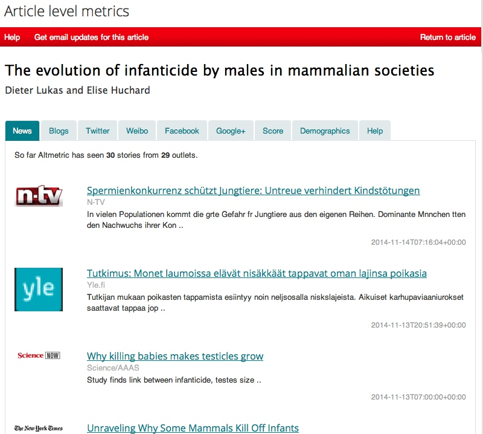
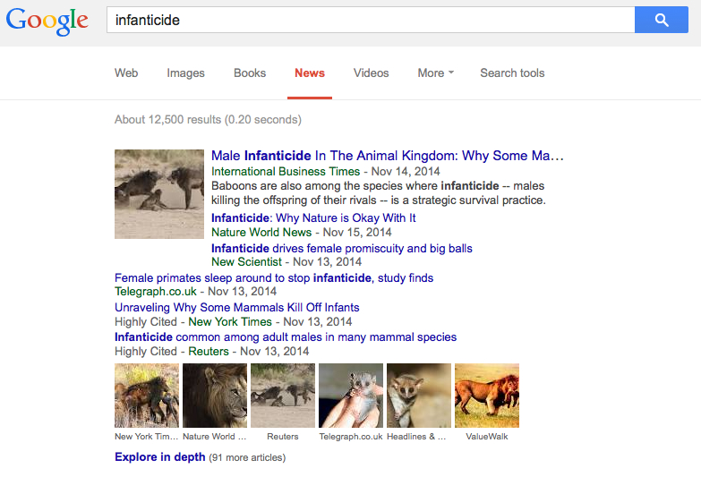
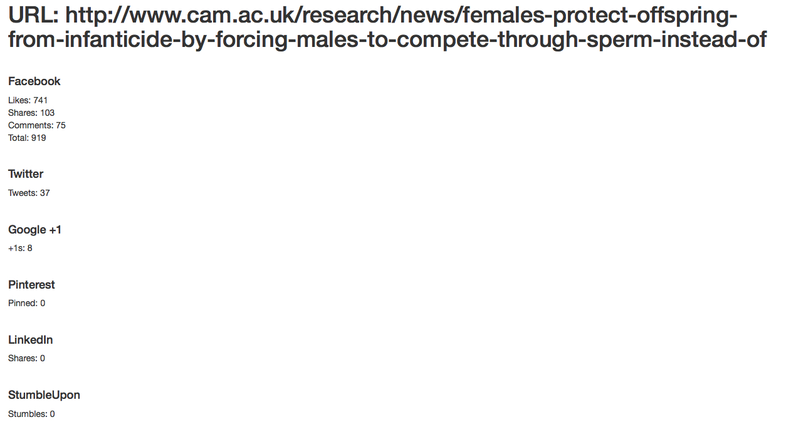
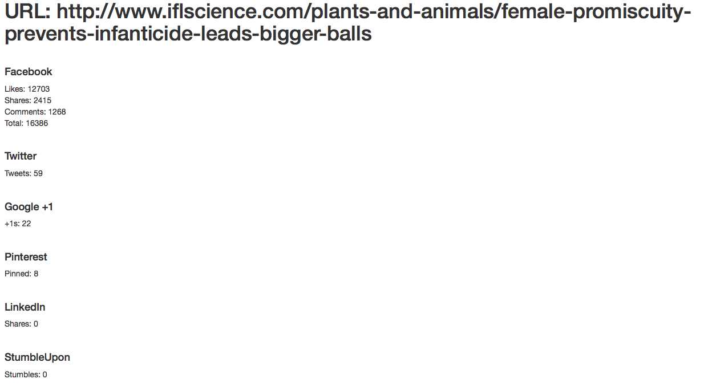
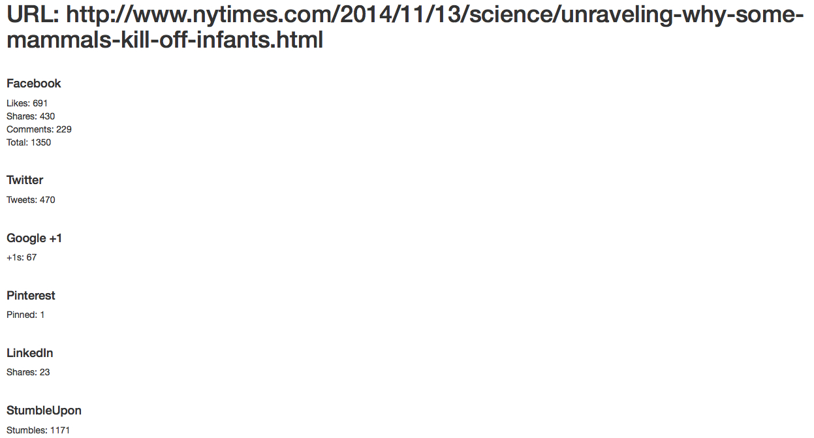
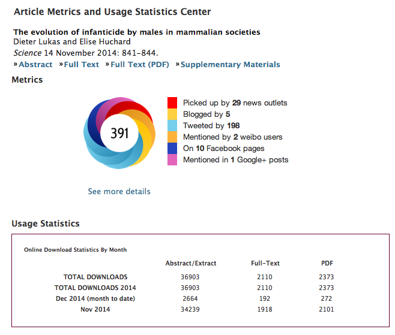

|
3) Where
did our findings end up and who might they have reached?
Journalists I interact with always tell me where
their stories end up and they usually send a link.
But there is so much more out there, so how to find it?
Article
Level Reporting of the Journal or from the service Altmetric
Most
science journals now include information on the reach of each
publication. These vary in the level of detail. Some directly cooperate
with Altmetric, a service that aggregates news and
social media attention for scientific publications:

Altmetric
is one way to get a first overview of where my findings have been
distributed. However, since it needs the reports and social media to
include a URL to the original publication, Altmetric
misses quite a lot. Especially on social media people mainly link to
news stories rather than the original papers (let's be honest, I get
most of my science news from these digests rather than from reading the
actual papers).
Google News
This is a great service to find articles
that report my findings:

It is also helpful to check the additional
language/country versions for further reports (e.g., google.de).
SharedCount
As mentioned above, most social media
links will go to news articles. To see their reach, there is a service
called SharedCount,
which will display the social media reach for any website.
For example, the actual press release did get attention on Facebook:

The
biggest reach on Facebook seems to be I
F*!*ing Love Science (not surprisingly I
guess, but I didn't know that they now write
their own material):

And, as mentioned above, the NY Times
article by Carl Zimmer was linked in more than twice as many tweets as
the actual paper:

Diversity of science reporting
The
internet has led to an expansion of where science is being covered, and
different channels might be more likely to reach different audiences:
- I am more likely to hear from a colleague that "oooooh, person xyz
covered your research" than "oh, your research made it into the
national newspaper".
Younger scientists seem to focus on specific reporters rather than specific outlets, following them on Twitter (here's a list to start) or their blogs (a connected community) to discover science news.
- Older scientists seem to discover news in more established outlets,
such as New Scientist or the science section of national newspapers.
- My family found reports in general online news stations.
Impact for the publication
All
this media reporting meant that the actual paper itself (or, at least
its abstract) was accessed (and maybe read) by a large number of people:

All
of this might mean that to reach a wide audience, getting my results
into the news might be more important than getting them into a
particular
journal.
This was first jokingly suggested to me by Virginia Morell as "getting results into
Science
Now news might
be more important than getting them into Science
Magazine" (she writes for the Science Now news
section), and I think there
is
something to it. It did make a difference though that the journal I
published in has a very
supportive and effective press office.
|
Main message
Explore the
news universe to find out where scientific results are covered.
Continue to part 4
to find out what made it into the news and how to deal with it.
|
|